JavaWeb学习笔记
1.html
1.1元素/标签
<开始标签[...属性]>标签内容</结束标签>
<标签名>标签内容</标签名>HTML结构元素顺序
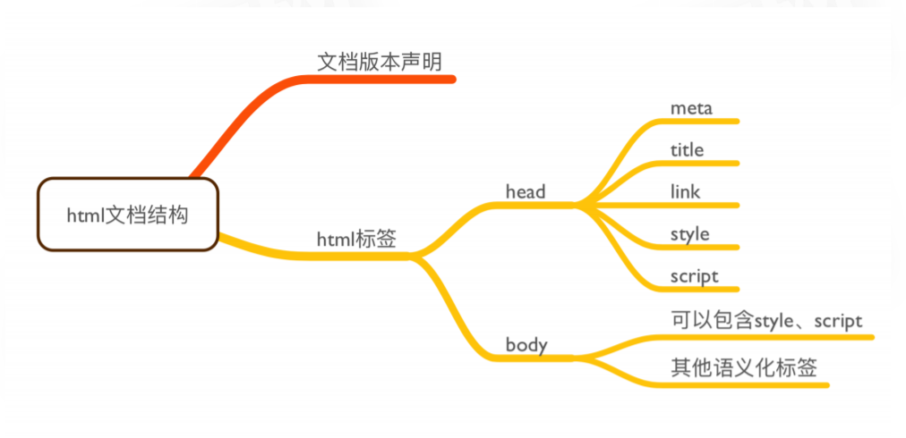
HTML属性：
- 属：给予元素基本标识
- 性：样式或描述元素特征
1.2标题
作用：浏览器会自动附件标题样式，搜索引擎或者阅读器能够根据标题来识别，生成文档大纲
<!-- 共有6级 -->
<h1>
标题内容
</h1>1.3段落
作用：划分段落
<p>
段落内容
</p>注意：
- 默认浏览器样式空标签也“占据一部分地方”，使用style样式就行修改
1.4font标签
作用：格式化文本
<!-- size大小 -->
<font size="7">文字内容</font>
<!-- face字体 -->
<font face="Helvetica">文字内容</font>
<!-- color颜色,三种表示方法 -->
<font color="red">xxx</font>
<font color="#d8d8d8">xxx</font>
<font color="rgb(168,178,188)">xxx</font>注意：
只能控制字体集，大小，颜色。。。
慎用
1.5链接
作用：文档内部锚点，跳转到外部文档，下载资源
<!-- href表示超文本引用 -->
<!-- target表示页面打开的方式：_blank表示从新页面；_self表示从当前页面 -->
<a href="http://www.baidu.com" target="_blank">xxx</a>
<!-- 从锚点跳转到titletThird -->
<a href="#titleThird">锚点</a>
<h3 id="titleThird">
xxx
</h3>
<!-- 禁止跳转,通过其他方式 -->
<a href="javascript:;">xxx</a>
<!-- 去掉下划线 -->
<style>
a{
text-decoration: none;
}
<!-- 浏览记录消失 -->
a:visitied{
color:#333333;
}
</style>1.6html图像
作用：插入图像
<!-- alt替换文本（图片无法正常显示时提示） -->
<img alt="xxx" src="图片地址"/>1.7列表
作用：插入无序，有序，定义列表
<!-- 无序,<li>xxx</li>表示里面的一项 -->
<ul>
<li>
xxx
</li>
</ul>
<!-- 有序 -->
<ol>
<li>
xxx
</li>
</ol>
<!-- 列表 -->
<dl>
<dt>
xxx
</dt>
<!-- 解释上面的dt -->
<dd> xx</dd>
</dl>
注意：
- type属性项目符号样式（disc，circle，square） 慎用
- 只用
就好
1.8div
作用：布局
<div>
xxx
</div>1.9块级元素和行内元素
| 块级元素 | 行内元素 |
|---|---|
| div | span |
| p | strong |
| form | em |
| ul | br |
| li | img |
| ol | input |
| address | label |
| fieldset | select |
| hr | textarea |
| menu | cite |
| table |
1.10带格式化的标签
<b>加粗字体</b>
<strong>另一种粗体</strong>
<big>大写字体</big>
<em>强调字体</em>
<i>斜体</i>
<small>小号字体</small>
<sub>下标</sub>
<sub>上标</sub>
<pre>预格式文本</pre>
<blockquote>
引用
</blockquote>
<del>删除线</del>
<ins>下划线</ins>1.11html表格
作用：布局，呈现需要表格布局的内容
<!-- tr行，td列，th表格头 -->
<table>
<tr>
<td>学号</td>
<td>姓名</td>
</tr>
<tr>
<td>学号</td>
<td>姓名</td>
</tr>
</table>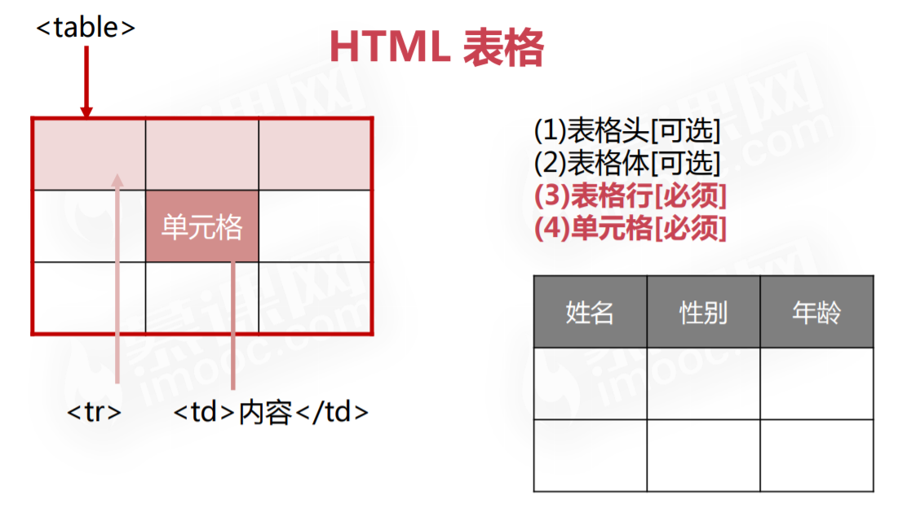
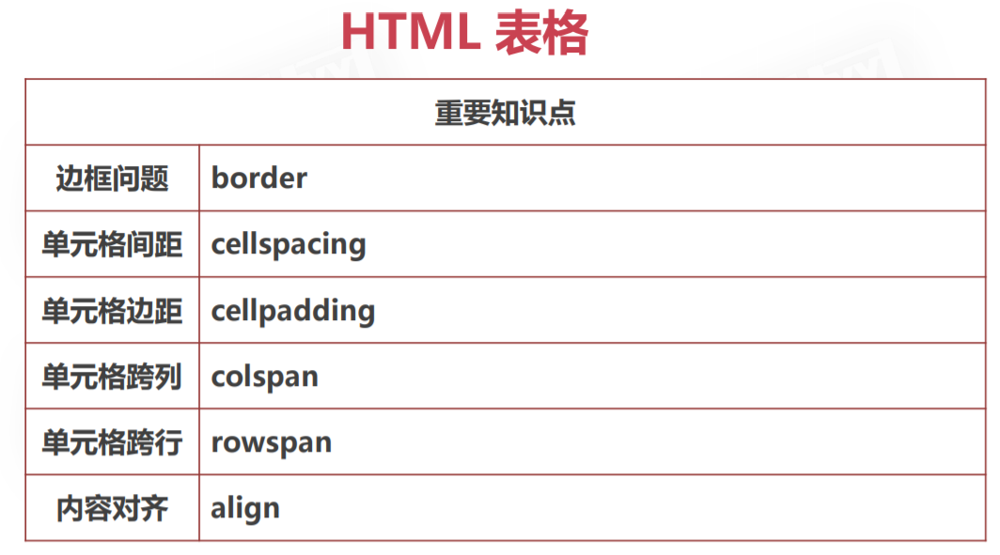
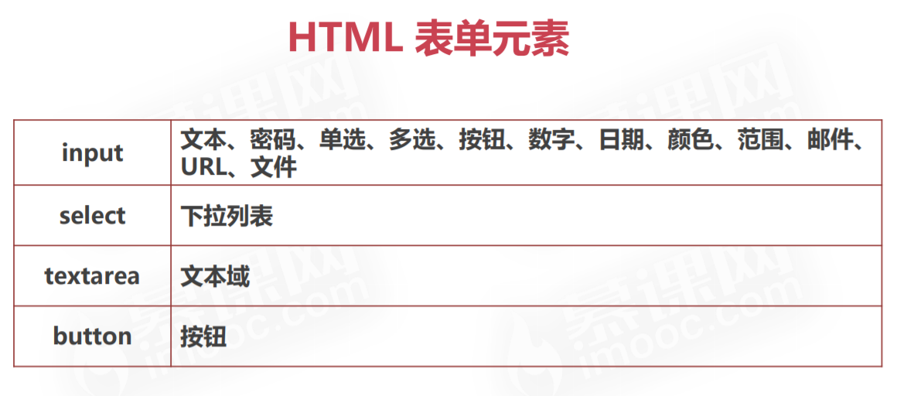
<!DOCTYPE html>
<html lang="en">
<head>
<meta charset="UTF-8">
<title>学习html</title>
</head>
<body>
<form aciton="">
<input type="text" maxlength="10" value="文本" />
</br>
<input type="password" value="密码" >
</br>
<input name="gender" value="0" type="radio">男<input name ="gender" value="1" type="radio">女
</br>
<input value="0" type="checkbox">电影
<input value="1" type="checkbox">音乐
<input value="2" type="checkbox">美术
</br>
<input type="button" value="按钮">
</br>
<input type="number">
</br>
<input type="color">
</br>
<input type="date">
</br>
<input min="10" max="50" type="range">
</br>
<input type="email">
</br>
<input type="submit">
</br>
<input type="url">
</br>
<input type="file" multiple="multiple">
</br>
<!-- multiple size表示可见显示的选择框数量 -->
<select name="" id="" multiple size="2">
<option value="">苹果</option>
<option selected value="">鸭梨</option>
<option value="">樱桃</option>
</select>
</br>
<textarea rows="3" cols="3"> </textarea>
<button type="submint" form="test">提交</button>
<button type="reset">重置</button>
</form>
</body>
</html>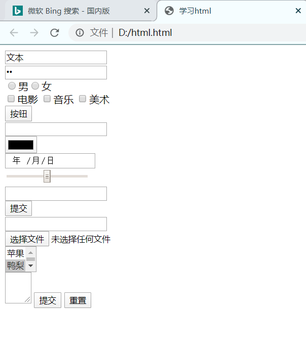
2.CSS
2.1CSS声明
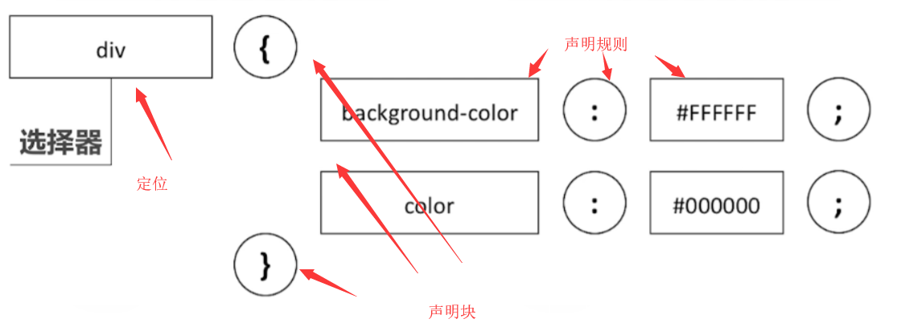
2.2CSS内联样式
仅对当前元素起作用，耦合度高
<!DOCTYPE html>
<html lang="en">
<head>
<meta charset="UTF-8">
<title>CSS</title>
<style>
body{
background-color: lightblue;
}
</style>
</head>
<body>
<!-- 内联样式 -->
<p style="color:lightcoral;font-weight: bolder;">段落</p>
</body>
</html>2.3CSS外联样式
第一种：
<!DOCTYPE html>
<html lang="en">
<head>
<meta charset="UTF-8">
<title>CSS</title>
<style>
body{
background-color: lightblue;
}
p{
color:lightcoral;
font-weight: bolder;
}
</style>
</head>
<body>
<p>段落内容</p>
<p>另一段段落内容</p>
</body>
</html>第二种：
新建CSS文件，进一步降低耦合度
<!DOCTYPE html>
<html lang="en">
<head>
<meta charset="UTF-8">
<title>CSS</title>
<link rel="stylesheet" href="0.css">
</head>
<body>
<p>段落内容</p>
<p>另一段段落内容</p>
</body>
</html>p{
color:lightcoral;
font-weight: bolder;
}注意：内联样式的优先级别高于外联样式
2.4CSS选择器
常见的选择器：
- ID选择器(慎用)
- 元素选择器(常用，匹配多个)
- class选择器(常用，匹配多个)
- 属性选择器
id属性的特点是唯一不重复
<!DOCTYPE html>
<html lang="en">
<head>
<meta charset="UTF-8">
<title>CSS选择器</title>
<style>
#p{
color:lightcoral;
}
.myclass{
color:lightblue;
}
span{
color:lightgreen;
}
[title]{
color:lightgray;
}
</style>
</head>
<body>
<p id="p">段落内容</p>
<p class="myclass">另一段段落内容</p>
<span>文本内容</span>
<p title="this is p">段落内容</p>
</body>
</html>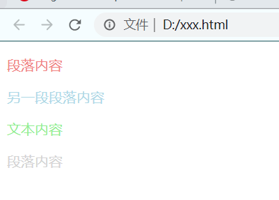
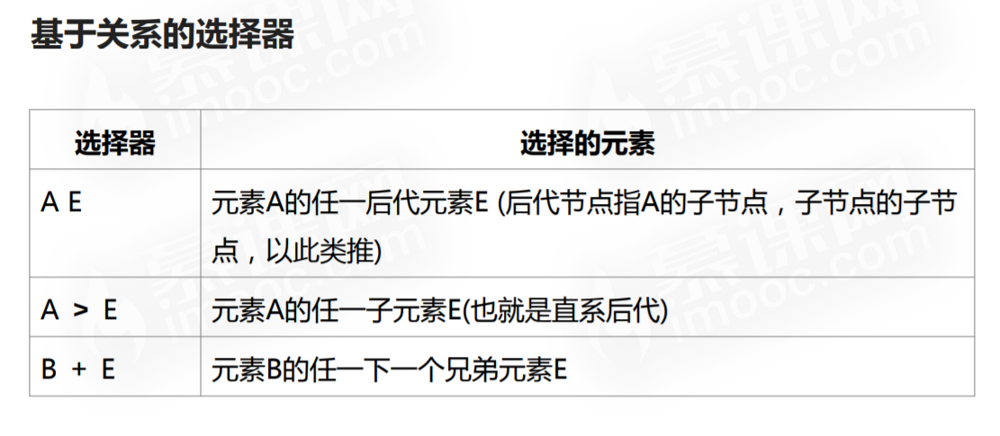
后代元素选择器：
<!DOCTYPE html>
<html lang="en">
<head>
<meta charset="UTF-8">
<title>后代选择器</title>
<style>
span{
background-color:lightblue;
}
div span{
background-color:lightcoral;
}
</style>
</head>
<body>
<div>
<span>Span 1.
<span>Span 2.</span>
</span>
</div>
<span>Span 3.</span>
</body>
</html>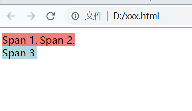
子类元素选择器：
<!DOCTYPE html>
<html lang="en">
<head>
<meta charset="UTF-8">
<title>子元素选择器</title>
<style >
span{
background-color:lightblue;
}
div >span{
background-color:lightcoral;
}
</style>
</head>
<body>
<div>
<span>Span 1. In the div.
<span>Span 2. In the span that's in the div.</span>
</span>
</div>
<span>Span 3. Not in a div at all</span>
</body>
</html>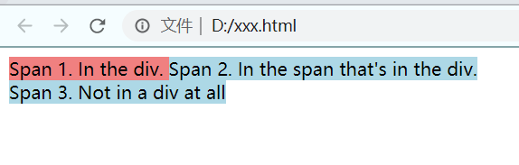
相邻元素选择器
<!DOCTYPE html>
<html lang="en">
<head>
<meta charset="UTF-8">
<title>相邻元素选择器</title>
<style>
#one + li{
color:lightcoral;
}
</style>
</head>
<body>
<ul>
<li id="one">One</li>
<li>Two</li>
<li>Three</li>
</ul>
</body>
</html>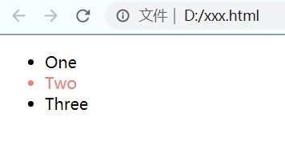
2.5CSS伪类
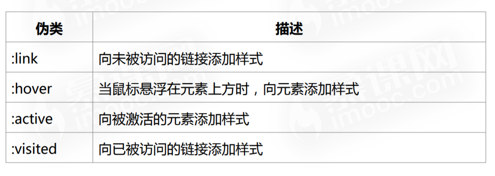
<!DOCTYPE html>
<html lang="en">
<head>
<meta charset="UTF-8">
<title>伪类</title>
<style>
<!-- 改变a元素链接的样式内容 -->
a:link{
color:lightblue;
}
a:hover{
color:lightcoral;
}
a:active{
color:lightgreen;
}
a:visited{
color:lightgray;
}
</style>
</head>
<body>
<a href="#">baidu.com</a>
</body>
</html>2.6CSS伪元素
伪元素：
- ::before会为当前元素创建一个子元素作为伪元素
- ::after用来匹配已选中元素的一个虚拟的最后子元素
<!DOCTYPE html>
<html lang="en">
<head>
<meta charset="UTF-8">
<title>伪元素</title>
<style>
q::before{
content: "<<";
color:lightgreen;
}
q::after{
content:">>";
color:lightcoral;
}
</style>
</head>
<body>
<q>引用</q>，xxx<q>xxx</q>
</body>
</html>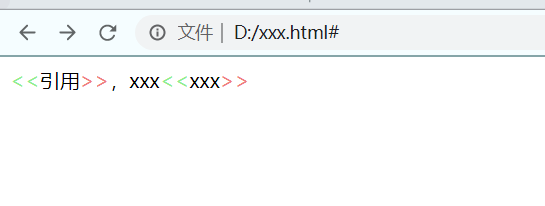
2.7CSS选择器的优先级别
- 外联样式：id选择器>类选择器的>元素选择器
- 内联样式的优先级别高于外联样式
- !important可以提高选择器的优先级
2.8CSS背景样式
- background:简写属性，作用将背景属性设置在一个声明中
- background-color:设置元素的背景颜色
- background-image:把图像设置为背景
- background-position:设置背景图像的起始位置
- background-repeat:设置背景图像是否重复
<!DOCTYPE html>
<html lang="en">
<head>
<meta charset="UTF-8">
<title>背景</title>
<style>
#p1{
background-color: lightcoral;
}
#p2{
background-image: url("xxx");
width: 20px;
height: 20px;
}
#p3{
background-image: url("xxx");
width:16px;
height:16px;
background-position: -64px -80px;
}
body{
background-image: url("");
background-repeat: no-repeat;
}
</style>
</head>
<body>
<p id="p1">段落内容</p>
<p id="p2"></p>
<p id="p3"></p>
</body>
</html>2.9CSS文本样式
- color:设置文本颜色
- text-align:对齐元素中的文本
- text-indent:缩进元素中文本的首行
- text-decoration:向文本添加修饰
- vertical-align:设置元素的垂直对齐
<!DOCTYPE html>
<html lang="en">
<head>
<meta charset="UTF-8">
<title>文本</title>
<style>
#p1{
color:lightcoral;
}
#p2{
text-align: left;
}
#p3{
text-align: center;
}
#p4{
text-align: right;
}
a{
text-decoration: none;
}
#p5{
text-indent: 50px;
}
</style>
</head>
<body>
<p id="p1">段落内容1.</p>
<p id="p2"> 段落内容2.</p>
<p id="p3">段落内容3.</p>
<p id="p4">段落内容4.</p>
<a href="#">链接</a>
<p id="p5">段落5.</p>
</body>
</html>2.10CSS字体样式
字体：
- font:在一个声明中设置所有的字体属性
- font-family:指定文本的字体系列
- font-size:指定文本的字体大小
- font-style:指定文本的字体样式
- font-weight:指定字体的粗细
<!DOCTYPE html>
<html lang="en">
<head>
<meta charset="UTF-8">
<title>字体</title>
<style>
/* 设置字体系列 */
#p1 {
font-family: "Times New Roman";
}
/* 设置自定义字体系列 */
@font-face {
font-family: 'FontAwesome';
src: url('font/fontawesome-webfont.eot?v=3.2.1');
src: url('font/fontawesome-webfont.eot?#iefix&v=3.2.1') format('embedded-opentype'), url('../font/fontawesome-webfont.woff?v=3.2.1') format('woff'), url('../font/fontawesome-webfont.ttf?v=3.2.1') format('truetype'), url('../font/fontawesome-webfont.svg#fontawesomeregular?v=3.2.1') format('svg');
font-weight: normal;
font-style: normal;
}
#p2 {
font-family: FontAwesome;
}
#p3 {
font-size: larger;
font-style: italic;
}
</style>
</head>
<body>
<p id="p1">this is text.</p>
<p id="p2">this is text too.</p>
<p id="p3">这是一个段落内容.</p>
</body>
</html>2.11CSS列表样式
列表：
- list-style:用于把所有用于列表的属性设置于一个声明中
- list-style-image:将图像设置为列表项标志
- list-style-type:设置列表项标志的类型
<!DOCTYPE html>
<html lang="en">
<head>
<meta charset="UTF-8">
<title>列表</title>
<style>
/* 设置列表项的预定义样式 */
#u1 {
list-style-type: decimal;
}
/* 设置列表项的图片样式 */
#u2 {
list-style-image: url("imgs/mac.png");
}
/* 设置列表项水平方向排列 */
#u3 {
list-style-type: none;
}
#u3>li {
float: left;
display: inline-block;
background-color: lightgreen;
padding: 5px;
}
</style>
</head>
<body>
<ul id="u1">
<li>苹果</li>
<li>西瓜</li>
<li>香蕉</li>
</ul>
<ul id="u2">
<li>苹果</li>
<li>西瓜</li>
<li>香蕉</li>
</ul>
<ul id="u3">
<li>苹果</li>
<li>西瓜</li>
<li>香蕉</li>
</ul>
</body>
</html>2.12CSS表格
表格：
- border:设置表格边框
- border-collapse:设置表格的边框是否被折叠成一个单一的边框或隔开
- width:定义表格的宽度
- text-align:表格中的文本对齐
- padding:设置表格中的填充
<!DOCTYPE html>
<html lang="en">
<head>
<meta charset="UTF-8">
<title>表格</title>
<style>
table, th, td {
border: 1px solid lightslategray;
border-collapse: collapse;
}
table {
width: 80%;
margin: 0px auto;
}
table th {
background-color: lightcoral;
color: white;
}
table th, table td {
padding: 10px;
}
.info {
background-color: lightgreen;
color: white;
}
</style>
</head>
<body>
<table>
<tr>
<th>名称</th>
<th>职位</th>
<th>收入</th>
</tr>
<tr class="info">
<td>张无忌</td>
<td>老板</td>
<td>100000</td>
</tr>
<tr>
<td>小昭</td>
<td>秘书</td>
<td>10000</td>
</tr>
<tr class="info">
<td>周芷若</td>
<td>主管</td>
<td>20000</td>
</tr>
</table>
</body>
</html>